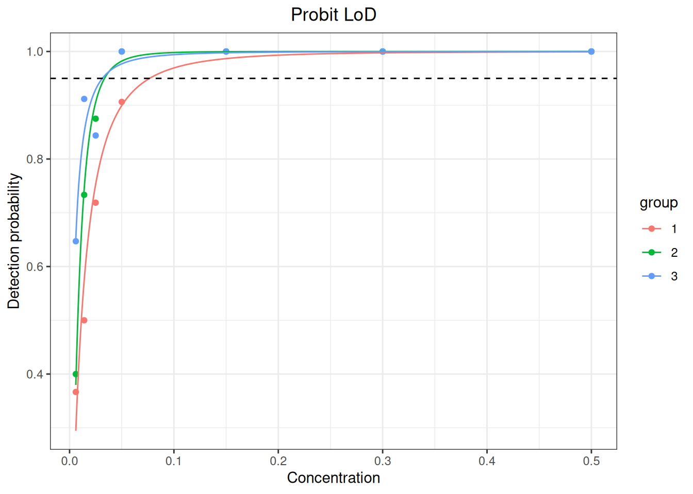

%%{init: {"theme":"base","themeVariables":{"primaryColor":"#EAF2FB","primaryBorderColor":"#2780E3","primaryTextColor":"#212529","lineColor":"#6C757D","secondaryColor":"#EAF7E6","tertiaryColor":"#FFF4E8","fontSize":"13px"},"flowchart":{"nodeSpacing":18,"rankSpacing":24,"padding":6}}}%%
flowchart LR
A["Define LoB, LoD, LoQ<br/>or claim-verification objective"] --> B["sensitivity_design()<br/>Check design"]
B --> C["sensitivity_lob()"]
C --> D["sensitivity_lod()"]
D --> E["sensitivity_loq()"]
E --> F["sensitivity_verify()"]
F --> G["Check method, precision profile,<br/>and verification rate"]
classDef input fill:#EAF2FB,stroke:#2780E3,color:#212529
classDef process fill:#EAF7E6,stroke:#3FB618,color:#212529
classDef output fill:#F4EEFB,stroke:#9954BB,color:#212529
class A input
class B,C,D,E,F process
class G output
16 Limits of Blank, Detection, and Quantitation
This chapter explains how to turn low-concentration experimental data into auditable sensitivity conclusions for the limit of blank (LoB), limit of detection (LoD), limit of quantitation (LoQ), and verification of those claims. The metrics answer different questions: LoB describes the upper tail of the blank distribution, LoD describes detection capability, and LoQ must additionally specify a precision or total-error requirement.
Workflow: establish or verify LoB, LoD, and LoQ
Code
library(ivdtools)16.1 Main Functions
The analytical-sensitivity module uses raw long-format data as its main input and separates limit establishment, claim verification, and study design:
| Function | Purpose |
|---|---|
sensitivity_lob() |
Establish nonparametric, parametric, or zero LoB |
sensitivity_lod() |
Classical, nonparametric, precision-profile, or Probit LoD |
sensitivity_loq() |
Westgard, RMS, precision-based, or custom-target LoQ |
sensitivity_verify() |
Verify an existing LoB, LoD, or LoQ claim |
sensitivity_design() |
View minimum design requirements and actual data counts |
16.1.1 Interfaces, Parameters, and Core Statistics
Code
sensitivity_lob(
data, result, sample, lot = NULL,
method = c("nonparametric", "parametric", "zero"),
alpha = 0.05, lot_rule = c("ep17", "separate", "combined"),
exclude = NULL
)
sensitivity_lod(
data, result = NULL, sample = NULL, lob, lot = NULL,
concentration = NULL, detected = NULL,
method = c("classical", "nonparametric", "profile", "probit"),
beta = 0.05, profile_model = c("linear", "quadratic", "sadler", "vfp")
)
sensitivity_loq(
data, result, sample, assigned, lot = NULL,
method = c("westgard", "rms", "precision", "custom"),
goal, goal_scale = c("relative", "absolute"),
lod = NULL, k = 2, profile = FALSE
)Nonparametric LoB is the \((1-\alpha)\) rank quantile of blank results; the parametric method uses
\[ LoB=\bar x_B+c_p s_B, \]
where \(c_p\) applies a finite-sample correction based on \(α\) and blank degrees of freedom \(B-K\). method="zero" fixes \(LoB=0\) and reports the proportion of blank results above zero. For classical LoD, SDs from multiple low-level samples are pooled by degrees of freedom:
\[ s_p=\sqrt{\frac{\sum_j(n_j-1)s_j^2}{\sum_j(n_j-1)}}, \]
and combined with LoB, \(β\), and a finite-sample correction. The precision-profile method solves for concentration-dependent SD; the Probit method fits the detection-probability–concentration relationship. Their data structures and assumptions differ.
At each LoQ level, bias is \(b=\bar x-x_a\). The four error quantities are:
method |
Quantity compared with goal |
|---|---|
westgard |
\(|b|+k s\) |
rms |
\(\sqrt{s^2+b^2}\) |
precision |
\(s\) |
custom |
Value returned by accuracy_function() |
When goal_scale="relative", the quantity is divided by \(|x_a|\). A candidate LoQ is the lowest observed mean or fitted-profile intersection satisfying the target. Multiple lots are handled by the selected lot_rule, and the most conservative finite candidate is reported. When LoD is supplied,
\[ LoQ_{\mathrm{reported}}=\max(LoQ_{\mathrm{candidate}},LoD). \]
sensitivity_lob(), sensitivity_lod(), and sensitivity_loq() return the corresponding limit, method, core statistics, and diagnostics.
16.1.2 Claim Verification and Design Checks
Code
sensitivity_verify(
data, result, sample, limit = c("lob", "lod", "loq"),
claim, lob = NULL, assigned = NULL, allowable_error = NULL,
error_scale = c("relative", "absolute"), alpha = 0.05
)
sensitivity_design(method = "all", data = NULL, ...)LoB verification counts \(x\le claim\), LoD verification counts \(x\ge LoB\), and LoQ verification checks whether results fall within the allowable-error window around the assigned value. The function returns the observed success proportion, a one-sided Wilson score interval, and EP17 Table 1 boundaries, but intentionally does not generate a pass field. sensitivity_design() gives minimum design requirements and can summarize actual data counts; it shows gaps but does not replace protocol decisions.
sensitivity_verify() returns the observed success proportion, Wilson interval, and boundary information. sensitivity_design() returns minimum requirements and an actual-count table.
16.2 Analysis Examples
16.2.1 LoB
Each row of the raw data is one measurement:
Code
# Simulate data
set.seed(17)
blank <- expand.grid(
lot = c("A", "B"), sample = paste0("blank", 1:4), replicate = 1:15
)
blank$result <- rnorm(nrow(blank), 0.2, 0.1)
head(blank, 6) lot sample replicate result
1 A blank1 1 0.09849913
2 B blank1 1 0.19203633
3 A blank2 1 0.17670130
4 B blank2 1 0.11827321
5 A blank3 1 0.27720908
6 B blank3 1 0.18343881Code
# Establish LoB
lob_np <- sensitivity_lob(
blank, result = "result", sample = "sample", lot = "lot",
method = "nonparametric"
)
lob_npAnalytical sensitivity: LOB
Method: nonparametric
Estimate: 0.378828 EP17 lot rules are used by default for all establishment functions: 2–3 lots are calculated separately and the maximum is reported; 4 or more lots are combined. Negative measurement results are not automatically truncated to 0.
16.2.2 LoD
Classical LoD uses the pooled SD of low-level samples:
Code
# Simulate data
low <- expand.grid(
lot = c("A", "B"), sample = paste0("low", 1:4), replicate = 1:15
)
low$result <- rnorm(nrow(low), 1.2, 0.2)
head(low, 6) lot sample replicate result
1 A low1 1 1.4763513
2 B low1 1 1.2897865
3 A low2 1 1.1695380
4 B low2 1 1.2518588
5 A low3 1 0.8777197
6 B low3 1 0.7982088Code
# Establish LoD
lod_classical <- sensitivity_lod(
low, result = "result", sample = "sample", lot = "lot",
lob = lob_np, method = "classical"
)
lod_classicalAnalytical sensitivity: LOD
Method: classical
Estimate: 0.771614 method = "profile" supports linear, quadratic, sadler, and vfp precision profiles; method = "probit" supports raw 0/1 detection results or count/total summaries. Cochran statistics and fit measures are diagnostics only; the program does not choose the analysis path for the user.
16.2.3 LoQ
The LoQ accuracy target must be prespecified. A relative target is expressed as a proportion, so 21.6% is written 0.216:
Code
# Simulate data
loq_data <- expand.grid(
lot = c("A", "B"), sample = paste0("pool", 1:4), replicate = 1:9
)
loq_data$assigned <- rep(rep(c(30, 35, 40, 45), each = 9), 2)
loq_data$result <- rnorm(nrow(loq_data), loq_data$assigned,
0.06 * loq_data$assigned)
head(loq_data, 6) lot sample replicate assigned result
1 A pool1 1 30 29.70842
2 B pool1 1 30 28.62287
3 A pool2 1 30 29.82049
4 B pool2 1 30 30.07043
5 A pool3 1 30 28.84843
6 B pool3 1 30 28.98056Code
# Establish LoQ
loq_te <- sensitivity_loq(
loq_data, result = "result", sample = "sample", assigned = "assigned",
lot = "lot", method = "westgard", goal = 0.216,
goal_scale = "relative", lod = lod_classical
)
loq_teAnalytical sensitivity: LOQ
Method: westgard
Estimate: 29.4924
Candidate LoQ: 29.4924
Reported LoQ : 29.4924 The result stores both candidate_loq and reported_loq, so the LoD constraint does not overwrite the original candidate value.
16.2.4 Claim Verification
limit can specify only one claim type at a time:
Code
# Simulate data
verification <- data.frame(
sample = rep(c("blank1", "blank2"), each = 10),
result = c(rep(0, 19), 1.2)
)
head(verification, 6) sample result
1 blank1 0
2 blank1 0
3 blank1 0
4 blank1 0
5 blank1 0
6 blank1 0Code
# Verify LoB
v_lob <- sensitivity_verify(
verification, result = "result", sample = "sample",
limit = "lob", claim = 1
)
v_lobAnalytical sensitivity: VERIFICATION
Method: lob
Limit : lob
Claim : 1
LoB : 1
Total results : 20
Consistent results : 19
Observed proportion : 0.95
Score CI lower : 0.80399276
Score CI upper : 0.98876518
EP17 boundary : 0.85
Difference from boundary : 0.1- LoB: count
result <= claim. - LoD: count
result >= lob; the LoD claim is not a detection decision threshold. - LoQ: check whether the result falls within the allowable-error window around each sample’s assigned value.
The result contains the observed proportion, one-sided Wilson interval, EP17 Table 1 boundaries, and differences. It does not contain a pass or verified field.
16.2.5 Study Design
Code
sensitivity_design("all")Analytical sensitivity study design
Method: classical
Reagent lots : 2
Instruments : 1
Days : 3
Blank samples : 4
Low samples : 4
Concentration levels : NA
Replicates per lot : 60
Replicate scope : blank and low results separately
Method: profile
Reagent lots : 2
Instruments : 1
Days : 5
Blank samples : 0
Low samples : 5
Concentration levels : 5
Replicates per lot : 40
Replicate scope : per sample
Method: probit
Reagent lots : 2
Instruments : NA
Days : NA
Blank samples : 0
Low samples : 3
Concentration levels : 5
Replicates per lot : 20
Replicate scope : per sample and concentration level
Method: loq
Reagent lots : 2
Instruments : 1
Days : 3
Blank samples : 0
Low samples : 4
Concentration levels : 1
Replicates per lot : 36
Replicate scope : total low results
Method: verification
Reagent lots : 1
Instruments : 1
Days : 3
Blank samples : 2
Low samples : 0
Concentration levels : 1
Replicates per lot : 20
Replicate scope : total verification resultsCode
sensitivity_design("verification", verification,
result = "result", sample = "sample", limit = "lob")Analytical sensitivity study design
Method : verification
Reagent lots : 1
Instruments : 1
Days : 3
Blank samples : 2
Low samples : 0
Concentration levels : 1
Replicates per lot : 20
Replicate scope : total verification results
Observed study counts
Observations : 20
Reagent lots : NA
Days : NA
Samples : 2
Concentration levels : NAThe design object reports minimum requirements alongside actual counts but does not make a pass/fail decision. Exclusions must be supplied explicitly through exclude and are preserved in the result object.
16.2.6 Standard Case: CLSI EP17-A2 Appendix A, Classical LoB and LoD
Two reagent lots each have 60 blank and 60 low-level results. Calculate each lot under the EP17 lot rule and report the larger value.
Code
ep17_blank <- read.csv("./data/016-分析灵敏度/std-ep17-appendix-a-blank.csv", check.names = FALSE)
ep17_low <- read.csv("./data/016-分析灵敏度/std-ep17-appendix-a-low.csv", check.names = FALSE)
ep17_lob_np <- sensitivity_lob(
ep17_blank, result = "result", sample = "sample", lot = "lot",
method = "nonparametric"
)
ep17_lod_np <- sensitivity_lod(
ep17_low, result = "result", sample = "sample", lot = "lot",
lob = ep17_lob_np, method = "classical"
)
ep17_lob_p <- sensitivity_lob(
ep17_blank, result = "result", sample = "sample", lot = "lot",
method = "parametric"
)
ep17_lod_p <- sensitivity_lod(
ep17_low, result = "result", sample = "sample", lot = "lot",
lob = ep17_lob_p, method = "classical"
)| Standard position | Statistic | Standard result | ivdtools result |
|---|---|---|---|
| EP17-A2 Appendix A | nonparametric LoB lot 1 | 7.6 | 7.6000 |
| EP17-A2 Appendix A | nonparametric LoB lot 2 | 9.4 | 9.4000 |
| EP17-A2 Appendix A | nonparametric LoB report | 9.4 | 9.4000 |
| EP17-A2 Appendix A | classical LoD lot 1 | 14.5 | 14.5309 |
| EP17-A2 Appendix A | classical LoD lot 2 | 13.8 | 13.8343 |
| EP17-A2 Appendix A | classical LoD report | 14.5 | 14.5309 |
| EP17-A2 Appendix A | parametric LoB report | 8.8 | 8.7956 |
| EP17-A2 Appendix A | parametric LoD report | 13.9 | 13.9266 |
Negative measurement results are retained as in the source table and are not truncated to 0.
16.2.7 Standard Case: CLSI EP17-A2 Appendix C, Probit LoD
All 66 zero-concentration results from three lots are negative, supporting LoB = 0 in this example. Because zero concentration cannot be log-transformed, only positive-concentration rows are sent to the Probit model; zero-concentration counts remain in the input table for LoB checking.
Code
ep17_probit <- read.csv("./data/016-分析灵敏度/std-ep17-appendix-c-probit.csv", check.names = FALSE)
ep17_probit_fit_data <- ep17_probit[ep17_probit$concentration > 0, ]
ep17_c_lod <- sensitivity_lod(
ep17_probit_fit_data,
result = "positive", sample = "sample", lob = 0, lot = "lot",
concentration = "concentration", detected = "positive", total = "total",
method = "probit", concentration_scale = "log10"
)
plot(ep17_c_lod)
| Standard position | Statistic | Standard result | ivdtools result |
|---|---|---|---|
| EP17-A2 Appendix C | Probit LoD lot 1 | 0.077 | 0.0766 |
| EP17-A2 Appendix C | Probit LoD lot 2 | 0.033 | 0.0335 |
| EP17-A2 Appendix C | Probit LoD lot 3 | 0.031 | 0.0314 |
The three LoDs are 0.077, 0.033, and 0.031 CFU/mL; the maximum, 0.077 CFU/mL, is reported. Neither goodness-of-fit test indicates lack of fit, but this appendix uses one sample, a deliberate simplification that falls below the minimum three-sample design and must not be treated as a compliant study template.
16.2.8 Standard Case: CLSI EP17-A2 Appendices E and F, Claim Verification
Code
ep17_ef <- read.csv("./data/016-分析灵敏度/std-ep17-appendix-e-verification.csv", check.names = FALSE)
ep17_f <- read.csv("./data/016-分析灵敏度/std-ep17-appendix-f-loq-verification.csv", check.names = FALSE)
ep17_verify_lob <- sensitivity_verify(
ep17_ef[ep17_ef$type == "blank", ],
result = "result", sample = "sample", limit = "lob", claim = 20
)
ep17_verify_lod <- sensitivity_verify(
ep17_ef[ep17_ef$type == "positive", ],
result = "result", sample = "sample", limit = "lod", claim = 45,
lob = 20
)
ep17_verify_loq <- sensitivity_verify(
ep17_f, result = "result", sample = "sample", limit = "loq", claim = 50,
assigned = "target", allowable_error = 0.15
)| Standard position | Statistic | Standard result | ivdtools result |
|---|---|---|---|
| EP17-A2 Appendices E-F | LoB consistency (%) | 95.8 | 95.8333 |
| EP17-A2 Appendices E-F | LoD consistency (%) | 91.7 | 91.6667 |
| EP17-A2 Appendices E-F | LoQ consistency (%) | 91.1 | 91.1111 |
16.2.9 Standard Case: YY/T 1789.3-2022 Appendix A, ProGRP
Appendix A gives 60 blank and 60 low-concentration results for each of two lots and can be analyzed directly with sensitivity_lob() and sensitivity_lod(). Negative blanks are retained as reported and are not truncated to zero.
Code
yyt1789_3_blank <- read.csv(
"./data/016-分析灵敏度/std-yyt1789-3-appendix-a-blank.csv"
)
yyt1789_3_low <- read.csv(
"./data/016-分析灵敏度/std-yyt1789-3-appendix-a-low.csv"
)
yyt1789_3_lob_np <- sensitivity_lob(
yyt1789_3_blank, result = "result", sample = "sample", lot = "lot",
method = "nonparametric"
)
yyt1789_3_lob_p <- sensitivity_lob(
yyt1789_3_blank, result = "result", sample = "sample", lot = "lot",
method = "parametric"
)
yyt1789_3_lod_classical <- sensitivity_lod(
yyt1789_3_low, result = "result", sample = "sample", lot = "lot",
lob = yyt1789_3_lob_np, method = "classical"
)
yyt1789_3_lod_np <- sensitivity_lod(
yyt1789_3_low, result = "result", sample = "sample", lot = "lot",
lob = yyt1789_3_lob_np, method = "nonparametric"
)| Standard position | Statistic | Standard result | ivdtools result |
|---|---|---|---|
| YY/T 1789.3 Appendix A | nonparametric LoB lot 1 | 0.240 | 0.2450 |
| YY/T 1789.3 Appendix A | nonparametric LoB lot 2 | 0.250 | 0.2500 |
| YY/T 1789.3 Appendix A | reported LoB | 0.250 | 0.2500 |
| YY/T 1789.3 Appendix A | parametric LoB lot 1 | 0.174 | 0.1758 |
| YY/T 1789.3 Appendix A | parametric LoB lot 2 | 0.176 | 0.1779 |
| YY/T 1789.3 Appendix A | classical LoD lot 1 | 0.350 | 0.3570 |
| YY/T 1789.3 Appendix A | classical LoD lot 2 | 0.360 | 0.3673 |
| YY/T 1789.3 Appendix A | nonparametric LoD lot 1 | 1.075 | 1.0750 |
| YY/T 1789.3 Appendix A | nonparametric LoD lot 2 | 1.130 | 1.1300 |
Three intermediate algorithm differences must be disclosed:
- The standard takes the 57th order statistic for nonparametric LoB, whereas the package uses continuous rank 57.5 and interpolates between positions 57 and 58. Lot 1 is therefore 0.245 rather than 0.24; after taking the larger of the two lots, the reported value is still exactly 0.25.
- Standard Table A.6 uses displayed pooled SDs of 0.065/0.066 and coefficient 1.653, producing classical LoDs of 0.35/0.36. The package calculates pooled SD from raw results and uses its own finite-sample coefficient 1.6486, producing approximately 0.357/0.367. The methods are similar but not identical; close final rounding does not establish complete reproduction.
- Parametric LoB also differs because of the finite-sample coefficient convention, yielding approximately 0.1758/0.1779 rather than the standard’s 0.174/0.176.